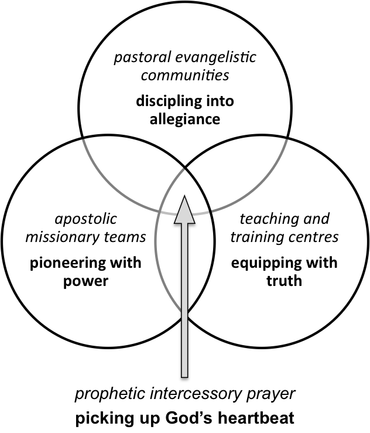

<!DOCTYPE html>
<html>
<head>
	<meta charset="utf-8"/>
	<meta name="creator" content="Marked.app"/>
	<meta name="version" content="0.4.2 --- Publishing Draft (Post-Editorially, pre-In-Design)"/>
	<meta name="change" content="Replaced ch7 (Information) with ch1 (Using this handbook)"/>
	<meta name="latex-input" content="mpd-textbook-header"/>
	<title>MPD-M4</title>
	<meta name="subtitle" content="Dynamics of Commissioning"/>
	<meta name="author" content="Dr John B Clements"/>
	<meta name="email" content="clements.jb@gmail.com"/>
	<meta name="web" content="http://maizeplantdiscipleship.wordpress.com"/>
	<meta name="copyright" content="John B Clements, 2014.  This work is licensed under a Creative Commons Licence: http://creativecommons.org/licenses/by-sa/3.0/"/>
	<meta name="keywords" content="discipleship, mission, messianic, community"/>
	<meta name="base-header-level" content="2"/>
	<meta name="latex-mode" content="memoir"/>
	<meta name="latex-input" content="mpd-textbook-document"/>
	<meta name="latex-footer" content="mpd-textbook-footer"/>
</head>
<body>

<h1 id="using-this-handbook">Using This Handbook</h1>

<p>This module explores <em>God&#8217;s commissioning</em> of the Messianic Community, in four inter-related studies: </p>

<ol>
<li><p><a href="#the-commissioning-of-messianic-community">The Commissioning of Messianic Community</a> </p></li>
<li><p><a href="#the-strategies-of-messianic-community">The Strategies of Messianic Community</a> </p></li>
<li><p><a href="#the-structures-of-messianic-community">The Structures of Messianic Community</a> </p></li>
<li><p><a href="#the-expansion-of-messianic-community">The Expansion of Messianic Community</a> </p></li>
</ol>

<p>This module is number 4 of 16 that comprise the <em>Maize Plant Discipleship Syllabus</em>: </p>

<ol>
<li>The Eternal Purpose of God</li>
<li>Dynamics of Vocation, The Nations</li>
<li>Dynamics of Vocation, The Jews</li>
<li>Dynamics of Commissioning</li>
<li>Dynamics of Body Membership</li>
<li>Dynamics of Revival</li>
<li>Dynamics of Truth</li>
<li>Dynamics of Intercession</li>
<li>Dynamics of Cultural Transformation</li>
<li>Disciplines of Spiritual Maturity</li>
<li>Disciplines of Running the Race</li>
<li>Disciplines of Pressing Towards our Vocation</li>
<li>Disciplines of Economic Faithfulness</li>
<li>Disciplines of Messianic Leadership</li>
<li>Disciplines of Living By Faith</li>
<li>Disciplines of Overcoming in the Arena of Spiritual Conflict</li>
</ol>

<p>Module handbooks are designed to facilitate reflective learning and group discussions, based on scripture readings and topical studies. Their use does not require expert teachers or theologians: only facilitators willing to co-ordinate small groups of people. </p>

<p>Guidelines on appropriately facilitating study groups and discussions (as well as significant background information) is incorporated in the <em>Maize Plant Discipleship Facilitators&#8217; Handbook</em>, available from the same source as this handbook. For further information please visit the website: </p>

<ul>
<li>http://maizeplantdiscipleship.wordpress.com/</li>
</ul>

<h1 id="the-commissioning-of-messianic-community">The Commissioning of Messianic Community</h1>

<h2 id="synopsis">Synopsis</h2>

<blockquote>
<p><strong>The Messianic Covenant Community has been commissioned to work alongside the Messiah in his mission</strong> </p>
</blockquote>

<h3 id="topics">Topics</h3>

<ol>
<li><p><a href="#military-commissioning">Military commissioning</a> </p></li>
<li><p><a href="#gods-commissioning">God&#8217;s commissioning</a> </p></li>
<li><p><a href="#commissioned-as-disciples">Commissioned as disciples</a> </p></li>
</ol>

<h3 id="terms">Terms</h3>

<dl>
<dt><strong>Commission</strong></dt>
<dd><em>To charge with responsibility</em> for a task or duty, as when a military officer is given a specific rank and responsibility (e.g. <em>he was commissioned after attending the training academy</em>)</dd>

<dd><em>To grant authority</em> to undertake a task or function, as when an architect is authorised to build something, (e.g. <em>the architect was commissioned to manage the project</em>).</dd>
</dl>

<h3 id="scripture">Scripture</h3>

<p>Read these passages aloud together. </p>

<ul>
<li>Numbers 27:23</li>
<li>2 Corinthians 2:17</li>
<li>Galatians 1:1</li>
<li>Colossians 1:25</li>
</ul>

<p>Memorise the following passages, in time for your next meeting. </p>

<dl>
<dt>Matthew 22:14</dt>
<dd>For many are called (invited and summoned), but few are chosen</dd>

<dt>1 Corinthians 9:17</dt>
<dd>For if I do this work of my own free will, then I have my reward; but if it is not of my own will, but is done reluctantly and under compulsion, I am still entrusted with a sacred trusteeship and commission</dd>
</dl>

<h2 id="military-commissioning">Military commissioning</h2>

<p>This section examines the experiences of a military soldier, in order to enlarge our understanding of what it means to be <em>commissioned</em>. It highlights three principal stages of becoming a soldier: calling, training and commissioning. </p>

<h3 id="calling">Calling</h3>

<p><strong>A soldier&#8217;s life starts</strong> when they perceive a <em>calling</em> to a life of military service. </p>

<p>A calling is an awareness that a particular occupation represents a desirable, compelling, or appropriate vocation to pursue. There may be many reasons why someone enlists in an army, but at some point they sense a calling towards it. </p>

<h3 id="training">Training</h3>

<p><strong>A soldier&#8217;s calling is tested</strong> with a period of intensive, <em>basic training</em>, which potentially equips them for a lifestyle of military service. </p>

<p>Trainee soldiers experience all kinds of difficult trials and hardships that test their discipline, teamwork, communication, competence, obedience, initiative, determination, loyalty and resolve. During this time, each individual’s capabilities and characteristics are either affirmed, enhanced or exposed as inadequate. </p>

<p>At the end of this period, training officers assess whether each soldier has satisfactorily completed basic training. If so, they may begin active service. If not, they must either repeat basic training, until they pass satisfactorily, or leave military service altogether. </p>

<h3 id="military">Commissioning</h3>

<p><strong>A soldier&#8217;s commissioning</strong> represents the beginning of their <em>active service</em>, as a member of a regiment or division of the army. </p>

<p>They are equipped and authorised for military service: capable, ready and trusted to fulfil their duties—which include general soldiering, as well as a personal vocation such as infantry, chef, driver, engineer, medic, officer and so on. </p>

<p>In this new phase, soldiers continue to lead highly-disciplined lives and to experience difficult trials and tests. However, unlike the training phase, significant achievements are rewarded—generally by receiving enhanced or additional responsibility. </p>

<h3 id="option">OPTION</h3>

<ul>
<li>Discuss <a href="#soldiering"><em>Soldiering</em></a>, or</li>
<li>Continue to <a href="#gods-commissioning"><em>God&#8217;s commissioning</em></a></li>
</ul>

<h2 id="gods-commissioning">God&#8217;s commissioning</h2>

<p>This section explores the origins of the word <em>mission</em> and its connection with <em>commissioning</em>, in order to understand how the messianic, new-covenant community is united with God&#8217;s mission. </p>

<h3 id="the-sending-of-god">The sending of God</h3>

<p>The English word, <em>mission</em>, derives from a Latin word, <em>missio</em>, meaning <em>sending</em>. It was originally used exclusively to refer to <em>God&#8217;s sending of himself</em> <a href="#fn:58680" id="fnref58680" title="see footnote" class="footnote">[1]</a> into the world, to restore it from the effects of human wickedness, idolatry, chaos, spiritual darkness, oppression, injustice and evil. We see this in three particular ways. </p>

<ul>
<li><p><strong>The Old Testament<a href="#fn:75487" id="fnref:75487" title="see footnote" class="footnote">[2]</a> reveals God&#8217;s covenant presence</strong> </p>

<p>In particular, the <em>Sh’kinah</em>, (Hebrew: glorious Presence of God; see Luke 2:9, Hebrews 1:3; 1 John 1:14, 2 Peter 1:17; Matthew 17:6 etc), which manifested as a pillar of cloud and fire during the exodus from Egypt (Exodus 13:17&#8211;14:29) and within the <em>Ark of the Covenant</em>, visited by Moses and Aaron (Exodus 40) and following Solomon’s dedication of the temple (2 Chronicles 7). </p></li>
<li><p><strong>The New Testament reveals the Messiah, Jesus</strong> </p>

<p>As “Lamb of God,” apostle and high priest and “the sole expression of the glory (<em>Sh’kinah</em>) of God—the perfect imprint and very image of God&#8217;s nature<a href="#fn:92294" id="fnref:92294" title="see footnote" class="footnote">[3]</a>”—in every way Jesus the Messiah reflects the reality that God the Father is a missional god. </p></li>
<li><p><strong>The New Testament reveals the Holy Spirit</strong> </p>

<p>As the <em>Breath<a href="#fn:9102" id="fnref:9102" title="see footnote" class="footnote">[4]</a></em> of the Messiah—sent by the Messiah, as the Messiah was sent by the Father—the Holy Spirit empowers and <em>sends</em> the messianic community, anointing us to do the works of God.<a href="#fn:25909" id="fnref:25909" title="see footnote" class="footnote">[5]</a> </p></li>
</ul>

<h3 id="the-sending-of-gods-people">The sending of God&#8217;s people</h3>

<p>Mission, having begun with God&#8217;s <em>sending</em> of himself, is enlarged through the biblical covenants, as the people of God are united with God and his mission—his sending of himself—within the world. </p>

<ul>
<li><p>This is what commissioning means: <em>to join, or unite with a particular mission</em> (<em>co</em> means joining, uniting or sharing, thus, <em>co-mission</em>). </p></li>
<li><p>The messianic covenant community is <em>commissioned</em> by God: united with his mission to reconcile and restore creation to himself, through the Messiah. </p></li>
</ul>

<h3 id="joining-the-messiahs-mission">Joining the Messiah&#8217;s mission</h3>

<p>The <em>mission</em> of Jesus is the purpose for which he was sent into the world: to represent the Father and to do the works of God, forming and sending disciples, in his name<a href="#fn:42716" id="fnref42716" title="see footnote" class="footnote">[6]</a>. </p>

<blockquote>
<p>As the Father sent me, so I now send you—<em>John 20:21</em> </p>
</blockquote>

<p>The <em>commission</em> of the messianic community means being united with and sharing in the <em>mission</em> of the Messiah: representing the Father, joining him in doing the works of God, forming and sending disciples in his name. </p>

<p>Thus, <em>Messianic commission</em> refers to joining, uniting with the Messiah, in his mission. </p>

<p>We are called to be with him; to be prepared, set apart, blessed, anointed and sent towards the world, for the sake of the world; to bless the peoples of the world, in God&#8217;s name.<a href="#fn:59523" id="fnref:59523" title="see footnote" class="footnote">[7]</a> </p>

<h3 id="option">OPTION</h3>

<ul>
<li>Discuss <a href="#commissioning-discussion"><em>Commissioning</em></a>, or</li>
<li>Continue to <a href="#commissioned-as-disciples"><em>Commissioned as disciples</em></a></li>
</ul>

<h2 id="commissioned-as-disciples">Commissioned as disciples</h2>

<p>This section explores parallels between soldiering and discipleship. </p>

<h3 id="the-metaphor-of-a-soldier">The metaphor of a soldier</h3>

<p>The apostle, Paul, uses the metaphor of a soldier to emphasise that disciples of Jesus Christ must endure discipline, hardship and suffering.<a href="#fn:76330" id="fnref76330" title="see footnote" class="footnote">[8]</a> </p>

<blockquote>
<p>Take your share of the hardships and suffering which you are called to endure as a good, first-class soldier of Jesus Christ. No soldier when in service gets entangled in the enterprises of civilian life; his aim is to satisfy and please the one who enlisted him—<em>2 Timothy 2:3&#8211;4</em> </p>
</blockquote>

<h3 id="called-to-serve">Called to serve</h3>

<p><a href="#military-commissioning"><em>Military commissioning</em></a> explored how soldiering begins with discerning a calling to military service. Messianic discipleship similarly begins with a <em>calling</em>. This happens as we personally or corporately discern a calling to serve God’s mission, in some way—to serve God’s eternal purpose.<a href="#fn:93137" id="fnref93137" title="see footnote" class="footnote">[9]</a> </p>

<h3 id="many-are-called-but-few-are-chosen">Many are called, but few are chosen</h3>

<p>Those who hear and respond to a calling to military service are only commissioned after satisfactorily completing basic training. Jesus&#8217; words, <em>Many are called, but few are chosen</em><a href="#fn:9945" id="fnref9945" title="see footnote" class="footnote">[10]</a> confirms that hearing the call to serve God&#8217;s mission is only a start. </p>

<p>Like soldiers, disciples of the Messiah need to learn the basic disciplines and specialised skills required for vocational service. Like soldiers, progressing from <em>calling</em> to <em>commissioning</em>—which is what it means to be <em>chosen</em> by the Messiah—requires yielding ourselves fully to the demands of vocational service: becoming disciplined, skilled and faithful in response to our calling. </p>

<ul>
<li><p>The process of calling, training and commissioning is how we are prepared for useful service<a href="#fn:26752" id="fnref:26752" title="see footnote" class="footnote">[11]</a>. </p></li>
<li><p>It is how we are enabled to become co-workers with the Messiah in his mission. </p></li>
<li><p>It is how we become appointed and anointed to work alongside him, gathering a <em>harvest of faithfulness</em>,<a href="#fn:43559" id="fnref:43559" title="see footnote" class="footnote">[12]</a> in the power of his Spirit. </p></li>
</ul>

<h3 id="option">OPTION</h3>

<ul>
<li>Discuss <em>Training</em> and <a href="#faithfulness"><em>Faithfulness</em></a>, or</li>
<li>Continue to <a href="#summary-commissioning"><em>Summary</em></a> and <a href="#commissioning"><em>Discussions</em></a></li>
</ul>

<h2 id="summary-commissioning">Summary</h2>

<p>This concludes the study, <em>The Commissioning of Messianic Community</em>, which: </p>

<ul>
<li><p>explored the metaphor of soldiering, including calling, training and commissioning; </p></li>
<li><p>explained that <em>commissioning</em> essentially means joining together in mission, illustrating how the new-covenant community joins with the Messiah&#8217;s mission; </p></li>
<li><p>compared military service with messianic discipleship, highlighting similarities relating to obedience, faithfulness and reward. </p></li>
</ul>

<p>In summary, the study revealed that </p>

<blockquote>
<p><strong>The Messianic Covenant Community has been commissioned to work alongside the Messiah in his mission as a community of disciples, called, equipped and chosen to serve God&#8217;s eternal purpose.</strong> </p>
</blockquote>

<h2 id="commissioning">Discussions</h2>

<h3 id="soldiering">Soldiering</h3>

<p><em>Related to <a href="#military-commissioning">Military commissioning</a></em> </p>

<blockquote>
<p><strong>Discuss how the rigours of military soldiering and its disciplines differ from the challenges of civilian life.</strong> </p>
</blockquote>

<ul>
<li>How helpful is the military metaphor of soldiering with respect to Christian discipleship in the context of your culture and your personal life?</li>
</ul>

<h3 id="commissioning-discussion">Commissioning</h3>

<p><em>Related to <a href="#gods-commissioning">God&#8217;s commissioning</a></em> </p>

<blockquote>
<p><strong>Discuss one thing relating to the idea of commissioning that stood out to you, during this study</strong>. </p>
</blockquote>

<ul>
<li>How might this idea contribute towards the development of Christian community in your local or national context?</li>
</ul>

<h3 id="training">Training</h3>

<p><em>Related to <a href="#commissioned-as-disciples">Commissioned as disciples</a></em> </p>

<blockquote>
<p><strong>Discuss messianic disciplines and hardships that are equivalent to a soldier&#8217;s basic training</strong>. </p>
</blockquote>

<ul>
<li>How might a Christian disciple fail the equivalent of basic training?</li>
</ul>

<h3 id="faithfulness">Faithfulness</h3>

<p><em>Related to <a href="#commissioned-as-disciples">Commissioned as disciples</a></em> </p>

<blockquote>
<p><strong>Discuss the importance of obedience, duty and faithfulness to a commission</strong>. </p>
</blockquote>

<ul>
<li>How does the <em>duty</em> of a commission differ from the <em>discipline</em> of basic training?</li>
</ul>

<h1 id="the-strategies-of-messianic-community">The Strategies of Messianic Community</h1>

<h2 id="synopsis">Synopsis</h2>

<blockquote>
<p><strong>Scripture reveals a series of five primary strategies empowering the mission of the Messianic community</strong> </p>
</blockquote>

<h3 id="topics">Topics</h3>

<ol>
<li><a href="#the-strategy-of-praying">The strategy of praying</a></li>
<li><a href="#the-strategy-of-reaching">The strategy of reaching</a></li>
<li><a href="#the-strategy-of-discipling">The strategy of discipling</a></li>
<li><a href="#the-strategy-of-teaching">The strategy of teaching</a></li>
<li><a href="#the-strategy-of-sending">The strategy of sending</a></li>
</ol>

<h3 id="terms">Terms</h3>

<ul>
<li><p><strong>Commission</strong> : <em>What</em> needs to be achieved—i.e. a task, a goal, a trust, a duty. </p></li>
<li><p><strong>Strategy</strong> : <em>How</em> a commission may be conducted effectively—i.e. a method; a plan of action. </p></li>
</ul>

<h3 id="scripture">Scripture</h3>

<p>Read these passages aloud together. </p>

<ul>
<li>Matthew 9:35&#8211;38</li>
<li>Mark 16:15&#8211;18</li>
<li>Luke 24:44&#8211;49</li>
<li>John 20:21&#8211;23</li>
<li>Matthew 28:18&#8211;20</li>
<li>Acts 26:15&#8211;18</li>
<li>Hebrews 5:11&#8211;14</li>
</ul>

<p>Memorise the following passages, in time for your next meeting: </p>

<dl>
<dt>John 20:21</dt>
<dd>Peace to you! (<em>Shalom, alecheim!</em>) Just as the Father has sent me forth, so I am sending you.</dd>

<dt>Matthew 28:19&#8211;20</dt>
<dd>Go and make people from all nations into disciples, immersing them into the reality of the Father, the Son and the Holy Spirit and teaching them to obey everything that I have commanded you.</dd>
</dl>

<h2 id="the-strategy-of-praying">The strategy of praying</h2>

<p>The foundational strategy of mission is <em>prayer</em> (<a href="#pray"></a>). </p>

<figure>

<figcaption>Foundational strategy: prayer</figcaption></figure>

<h3 id="strategic-prayer">Strategic prayer</h3>

<p><em>Strategic prayer</em> is not an afterthought, or a response to crisis. It is a forward-thinking, planned priority. As communities and as individuals, before reaching out towards others, we need to first spend time in prayer, so that God may begin to deal with our faults and empower us with his Spirit. </p>

<h3 id="a-plentiful-harvest">A plentiful harvest</h3>

<dl>
<dt>Matthew 9:35&#8211;38</dt>
<dd>When he (Jesus) saw the throngs, he was moved with pity and sympathy for them, because they were bewildered (harassed and distressed and dejected and helpless), like sheep without a shepherd. Then he said to his disciples, <em>The harvest is indeed plentiful, but the labourers are few. So pray to the Lord of the harvest to force and thrust out labourers into his harvest</em>.</dd>
</dl>

<p>As Jesus proclaims the Kingdom of God throughout Israel, he encounters crowds of bewildered people. Teaching his disciples, he uses a ripe, abundant harvest of crops, in nearby fields, as a metaphor for the people. </p>

<h3 id="a-harvesting-problem">A harvesting problem</h3>

<p>When Jesus likens bewildered people to a rich harvest, ready to be gathered, he is not describing a problem with the harvest. The problem he describes is a shortage of labourers ready and willing to gather the harvest. In other words: a shortage of trained disciples, ready to be commissioned into service. </p>

<p>How does Jesus teach his disciples to respond to this challenge? He points them directly towards the foundational strategy of mission: </p>

<blockquote>
<p><strong><em>Pray to the Lord of the harvest</em></strong>. </p>
</blockquote>

<h3 id="option">OPTION</h3>

<ul>
<li>Discuss <a href="#prayer"><em>Prayer</em></a>, or</li>
<li>Continue to <a href="#the-strategy-of-reaching"><em>The strategy of reaching</em></a></li>
</ul>

<h2 id="the-strategy-of-reaching">The strategy of reaching</h2>

<p>The second strategic step is <em>reaching</em> people, reconciling them with God, through the Messiah (<a href="#reach"></a>). </p>

<figure>

<figcaption>Second strategy: reconciliation</figcaption></figure>

<h3 id="reconciliation-with-god">Reconciliation with God</h3>

<dl>
<dt>Mark 16:15&#8211;16</dt>
<dd>As you go throughout the world, proclaim the Good News to all creation. Whoever trusts and is immersed will be saved; whoever does not trust will be condemned.</dd>

<dt>Acts 26:17&#8211;18</dt>
<dd>I am sending you to them to open their eyes and turn them from darkness to light, and from the power of Satan to God, so that they may receive forgiveness of sins and a place among those who are sanctified by faith in me.</dd>
</dl>

<p><em>Reaching people</em> implies a holistic process of leading people into <em>reconciliation</em> with God and his eternal purpose. Unless people experience the transformative power of the Messiah, they cannot be liberated to serve him as disciples. This process of reconciliation incorporates: </p>

<ul>
<li>God&#8217;s forgiveness and cleansing of our wrongdoings;</li>
<li>Forgiving others for wrongdoings inflicted upon us;</li>
<li>Deliverance from dominant sinful behaviour;</li>
<li>Cleansing from impurity, both spiritually and practically;</li>
<li>Deep renunciation of idols and idolatry;</li>
<li>Establishing wholehearted allegiance to the Messiah and his rule in our lives.</li>
</ul>

<p>Anything other than a complete change of direction, spiritually and practically, will cause people to stumble, sooner or later— and potentially fail to enter God&#8217;s kingdom at all. </p>

<h3 id="being-reconciled">Being reconciled</h3>

<p>Reaching <em>others</em> with a message of reconciliation and repentance challenges our own lifestyle and faithfulness. If we fail to exhibit kingdom values and priorities, while proclaiming God&#8217;s kingdom to others, it corrupts our personal testimony and, potentially, that of the Messianic Community. Before reconciling others, we must ourselves be fully reconciled and submitted to God. </p>

<h3 id="option">OPTION</h3>

<ul>
<li>Discuss <a href="#reconciliation"><em>Reconciliation</em></a>, or</li>
<li>Continue to <a href="#the-strategy-of-discipling"><em>The strategy of discipling</em></a></li>
</ul>

<h2 id="the-strategy-of-discipling">The strategy of discipling</h2>

<p>The third strategy is the <em>formation of disciples</em> (<a href="#disciple"></a>). </p>

<figure>

<figcaption>Third strategy: forming disciples</figcaption></figure>

<h3 id="discipleship-is-at-the-heart-of-messianic-community">Discipleship is at the heart of messianic community</h3>

<dl>
<dt>Matthew 28:19&#8211;20</dt>
<dd>Go and <em>make people from all nations into disciples</em>, immersing them into the reality of the Father, the Son and the Holy Spirit and teaching them to obey everything that I have commanded you</dd>
</dl>

<p>The forming of disciples is the very heart and centre of messianic community and mission. We are called and commissioned to make people from all nations into disciples, by immersing (baptising) them into the reality of God&#8217;s life, through the Messiah, by the Spirit. </p>

<h3 id="discipleship-deals-with-our-hearts">Discipleship deals with our hearts</h3>

<p>Discipleship deals with something deeper than the mind: our <em>hearts</em>—the centre of our being, the seat of our motivation, our willpower, our commitment. </p>

<ul>
<li><p>Authentic discipleship renews a person&#8217;s heart, as new allegiances, loyalties and practical priorities are adopted and applied. </p></li>
<li><p>Through discipleship we are challenged to become wholly aligned with God&#8217;s eternal and vocational purposes and to serve a new Master. </p></li>
</ul>

<p>Unless our hearts are challenged and renewed in this way, we remain merely <em>religious converts</em>—engaging in devotional, religious activity, whilst our will, character, allegiances, loyalties and lifestyle remain practically unchanged. </p>

<p>As we experience a process of formation into disciples of Jesus, we face the challenge of whether to make our whole heart available to God—or to shrink back from the demands of Messianic mission. Only as we allow our hearts to be transformed by the Holy Spirit do we begin the life of a disciplined co-worker of the Messiah<a href="#fn:60366" id="fnref60366" title="see footnote" class="footnote">[13]</a>: one who has been authentically <em>co-missioned</em> with him. </p>

<h3 id="the-priority-of-discipleship">The priority of discipleship</h3>

<p>Because discipleship deals with the heart, it must be a strategic, practical priority that <em>precedes</em> concentrated biblical <a href="#the-strategy-of-teaching">teaching</a>, which is for the spiritually mature. Teaching deals with our minds—our understanding, conviction and belief—and excessive teaching of immature, undisciplined people risks <em>puffing them up with knowledge</em>, instead of <em>building them up with God&#8217;s love</em>.<a href="#fn:77173" id="fnref77173" title="see footnote" class="footnote">[14]</a> </p>

<h3 id="option">OPTION</h3>

<ul>
<li>Discuss <a href="#discipleship"><em>Discipleship</em></a>, or</li>
<li>Continue to <a href="#the-strategy-of-teaching"><em>The strategy of teaching</em></a></li>
</ul>

<h2 id="the-strategy-of-teaching">The strategy of teaching</h2>

<p>The fourth strategy is <em>teaching</em> (<a href="#teach"></a>) </p>

<figure>

<figcaption>Fourth strategy: teaching the mature</figcaption></figure>

<h3 id="solid-food">Solid food</h3>

<dl>
<dt>Hebrews 5:12&#8211;14</dt>
<dd>In fact, though by this time you ought to be teachers, you need someone to teach you the elementary truths of God&#8217;s word all over again. You need milk, not solid food! Anyone who lives on milk, being still an infant, is not acquainted with the teaching about righteousness. But solid food is for the mature, who by constant use have trained themselves to distinguish good from evil.</dd>
</dl>

<p>The <em>solid food</em>, or <em>strong meat<a href="#fn:93980" id="fnref93980" title="see footnote" class="footnote">[15]</a></em> of God&#8217;s word is reserved for those who have become committed disciples, for whom biblical teaching: </p>

<ul>
<li><p>provides a fruitful source of insight, conviction, trust, knowledge, wisdom and understanding; </p></li>
<li><p>develops and deepens their knowledge and appreciation of messianic life, spirituality and vocational service. </p></li>
</ul>

<h3 id="spiritual-revelation">Spiritual revelation</h3>

<p>The spirit of <em>revelation</em> plays a vital role in messianic teaching ministry—as the disciples experienced when they met the risen Messiah. </p>

<dl>
<dt>Luke 24:45&#8211;47</dt>
<dd>He opened their minds, so that they could understand the Scriptures, telling them <em>Here is what it says: The Messiah is to suffer and to rise from the dead on the third day; in his name repentance, leading to forgiveness of sins, is to be proclaimed to people from all nations.</em></dd>
</dl>

<p>Revelation is a gift of the Spirit that opens our understanding to spiritual truths and realities. The Spirit of God expands our human understanding to incorporate spiritual truths that are not obtained by, nor received within, our natural, rational minds, but are revealed to our heart, or spirit.<a href="#fn:10788" id="fnref10788" title="see footnote" class="footnote">[16]</a> </p>

<p>Consider the following three concepts, which are related linguistically: </p>

<dl>
<dt>Rational</dt>
<dd>The natural mind of human beings is limited to <em>rational</em> knowledge—which is based upon human logic and reasoning;</dd>

<dt>Relational</dt>
<dd>The Spirit brings us into a personal, <em>relational</em> knowledge of God—which is based upon knowing and being known by the Messiah;</dd>

<dt>Revelational</dt>
<dd>The Spirit brings us into deeper, <em>revelational</em> knowledge of God&#8217;s will and purpose—which is based upon renewed, inspired spiritual insight and comprehension of the historical, covenantal faith, revealed originally to the prophets and apostles.</dd>
</dl>

<p>This is why Jesus challenged his disciples to recognise that covenantal, relational life is vital to understanding his teaching: many do not understand God&#8217;s ways because they have no experience of, or desire to do, God&#8217;s will. </p>

<dl>
<dt>John 7:17</dt>
<dd>If any man desires to do His will (God&#8217;s pleasure), he will know (have the needed illumination to recognise and can tell for himself) whether the teaching is from God or whether I am speaking from myself and of my own accord and on my own authority.</dd>
</dl>

<h3 id="the-word-of-god-in-its-fullness">The Word of God in its fullness</h3>

<p><em>The word of God in its fullness<a href="#fn:27595" id="fnref27595" title="see footnote" class="footnote">[17]</a></em> incorporates two interrelated aspects that balance and complement each other: <em>pastoral</em> and <em>prophetic</em>. Having said that, in practice, the distinction is not always obvious. </p>

<h4 id="pastoral-teaching">Pastoral teaching</h4>

<p>Pastoral teaching is generally directed towards preserving, communicating and applying the accumulated wisdom, knowledge, understanding and traditions of messianic community,<a href="#fn:44402" id="fnref44402" title="see footnote" class="footnote">[18]</a> including: </p>

<ul>
<li><p>Edifying disciples into <em>the Way</em> of following the Messiah; </p></li>
<li><p>Studying and interpreting scripture (theology); </p></li>
<li><p>Understanding the historical narratives and identity of messianic communities and denominations. </p></li>
</ul>

<p>Pastoral teaching and theology can tend to become inwardly protective of tradition, as well as unhelpfully shackled to modern academic standards. This leads to spiritual sterility, generational inertia and a growing lack of effective engagement with those outside of messianic community. </p>

<h4 id="prophetic-teaching">Prophetic teaching</h4>

<p>Prophetic teaching is directed towards interpreting the historical, contextual <em>signs of the times<a href="#fn:61209" id="fnref61209" title="see footnote" class="footnote">[19]</a></em> that call for an appropriate response from messianic communities, including: </p>

<ul>
<li><p>Weighing and critiquing the culture<a href="#fn:78016" id="fnref:78016" title="see footnote" class="footnote">[20]</a> of messianic communities and their response to God&#8217;s historical, contextual, missional purposes amongst the nations. </p></li>
<li><p>Offering and relating <em>the word of life<a href="#fn:94823" id="fnref:94823" title="see footnote" class="footnote">[21]</a></em> to those outside of messianic community, including appropriately weighing and critiquing human culture, in the light of God&#8217;s words. </p></li>
</ul>

<p>Prophetic teaching has historically tended to represent a threat to mainstream expressions of Christianity, leading to a marginalisation of new movements and a deepening of mainstream inertia. </p>

<h3 id="option">OPTION</h3>

<ul>
<li>Discuss <a href="#teaching"><em>Teaching</em></a>, or</li>
<li>Continue to <a href="#the-strategy-of-sending"><em>The strategy of sending</em></a></li>
</ul>

<h2 id="the-strategy-of-sending">The strategy of sending</h2>

<p>The fifth strategy is <em>sending</em> disciples (<a href="#prdts"></a>). </p>

<figure>

<figcaption>Fifth strategy: sending disciples</figcaption></figure>

<h3 id="culmination-of-strategies">Culmination of strategies</h3>

<dl>
<dt>John 20:21</dt>
<dd><em>Shalom aleikhem!</em> (Peace be upon you!) Just as the Father sent me, I myself am sending you.</dd>
</dl>

<p>Sending represents a culmination of the four strategies that have preceded it: prayer, reconciliation with God, formation of disciples and teaching about the kingdom. It refers to being sent to fulfil a missional, vocational calling, within: </p>

<ul>
<li>Inter-cultural contexts;</li>
<li>Intra-cultural contexts.</li>
</ul>

<p>In each case, God is the one who equips, empowers and sends workers, by his Spirit. When a particular community sends workers into new contexts, it should be in step with the Spirit, enacting and upholding God&#8217;s sending of those people.<a href="#fn:11631" id="fnref11631" title="see footnote" class="footnote">[22]</a> </p>

<h3 id="inter-cultural-contexts">Inter-cultural contexts</h3>

<p>Inter-cultural mission implies being sent to significantly different cultural, ethnic and geographical contexts. </p>

<ul>
<li><p>Intercultural work requires specialist intercultural training, experience and understanding, because culture profoundly affects how messianic community and vocation is translated into practice. </p></li>
<li><p>Intercultural work is typically highly-demanding, because of various risks and hardships related to living in and engaging with a different culture. </p></li>
<li><p>Intercultural work is the vocation of <a href="#apostolic-missionary-teams"><em>apostolic missionary teams</em></a>. </p></li>
</ul>

<h3 id="intra-cultural-contexts">Intra-cultural contexts</h3>

<p>Because God sends the whole messianic community towards all the peoples and cultures of the world, mission is not limited to crossing geographic, ethnic or intercultural barriers. <em>Intra-cultural mission</em> identifies that the messianic community is called and <em>sent</em> towards the people within its own original context. </p>

<ul>
<li><p>Intra-cultural sending implies co-operating with God&#8217;s purposes and forming disciples <em>wherever</em> we are working: living out our vocational responsibility in ways that influence and transform homes, families, communities, workplaces and institutions. </p></li>
<li><p>Whatever vocational role we occupy, each disciple should recognise how faithfulness to the Messiah&#8217;s missional priorities creates opportunities to introduce messianic perspectives, biblical truths and spiritual power into our personal and vocational contexts. </p></li>
<li><p>This includes participation in health-, wealth- and other worth-creating activities, such as arts, sports, media, civil service and government, which have historically been overlooked or devalued by some forms of Christian spirituality. </p></li>
</ul>

<h3 id="option">OPTION</h3>

<ul>
<li>Discuss <a href="#sending"><em>Sending</em></a>, or</li>
<li>Continue to <a href="#summary-strategy"><em>Summary</em></a> and <a href="#strategy"><em>Discussions</em></a></li>
</ul>

<h2 id="summary-strategy">Summary</h2>

<p>This concludes the study, <em>The Strategies of Messianic Community</em>, which explored five foundational, missional strategies: </p>

<ul>
<li>Foundational prayer;</li>
<li>Reconciliation with God;</li>
<li>Formation of disciples;</li>
<li>Teaching mature disciples;</li>
<li>Sending missional disciples.</li>
</ul>

<p>As each generation of disciples follow these strategies, a cyclical process (<a href="#cycle"></a>) begins to establish an expanding, missional <em>movement</em>. </p>

<figure>

<figcaption>The strategic cycle</figcaption></figure>

<h2 id="strategy">Discussions</h2>

<h3 id="prayer">Prayer</h3>

<p><em>Related to <a href="#the-strategy-of-praying">The strategy of praying</a></em> </p>

<blockquote>
<p><strong>Discuss practical habits that could help prayer be established as a strategic priority</strong>. </p>
</blockquote>

<ul>
<li>What difficulties have you encountered in making prayer a practical priority?</li>
<li>What is your strategic response to the practical actions that you have discussed?</li>
</ul>

<h3 id="reconciliation">Reconciliation</h3>

<p><em>Related to <a href="#the-strategy-of-reaching">The strategy of reaching</a></em> </p>

<blockquote>
<p><strong>Discuss what it means to be fully reconciled to God and his kingdom purposes</strong>. </p>
</blockquote>

<ul>
<li>Are you aware of outstanding issues that are hindering you, or your household or family, from experiencing peace with God?</li>
<li>What actions are you going to take with respect to these issues?</li>
</ul>

<h3 id="discipleship">Discipleship</h3>

<p><em>Related to <a href="#the-strategy-of-discipling">The strategy of discipling</a></em> </p>

<blockquote>
<p><strong>Discuss things to which you recognise your heart is devoted. Be honest</strong>. </p>
</blockquote>

<ul>
<li>In what ways do you recognise you might be sidetracked from a whole-hearted commitment to serving God&#8217;s purposes?</li>
</ul>

<h3 id="teaching">Teaching</h3>

<p><em>Related to <a href="#the-strategy-of-teaching">The strategy of teaching</a></em> </p>

<blockquote>
<p><strong>Discuss your personal experiences of what is referred to as the <em>strong meat</em> of God&#8217;s word</strong>. </p>
</blockquote>

<ul>
<li>How have these teachings affected your life?</li>
</ul>

<h3 id="sending">Sending</h3>

<p><em>Related to <a href="#the-strategy-of-sending">The strategy of sending</a></em> </p>

<blockquote>
<p><strong>Discuss what it means to be sent—including whether it is something that happens once, regularly, or continuously.</strong> </p>
</blockquote>

<ul>
<li><p>What is the role of the Holy Spirit in sending the whole Messianic Community? </p></li>
<li><p>How can we enact a lifestyle of being sent? </p></li>
</ul>

<h3 id="the-great-commission">The Great Commission</h3>

<blockquote>
<p><strong>Carefully examine Matthew 28:19&#8211;20: words of Jesus known as <em>the great commission</em>.</strong> </p>
</blockquote>

<ul>
<li>How closely does it relate to the five strategies that you have studied?</li>
</ul>

<h1 id="the-structures-of-messianic-community">The Structures of Messianic Community</h1>

<h2 id="synopsis">Synopsis</h2>

<blockquote>
<p><strong>The messianic community has a God-ordained structure that uniquely equips it to fulfil the messianic commission</strong> </p>
</blockquote>

<h3 id="topics">Topics</h3>

<ol>
<li><a href="#introducing-the-trialogue">Introducing the trialogue</a></li>
<li><a href="#pastoral-evangelistic-community">Pastoral, evangelistic community</a></li>
<li><a href="#teaching-and-training-centres">Teaching and training centres</a></li>
<li><a href="#apostolic-missionary-teams">Apostolic missionary teams</a></li>
<li><a href="#prophets-priests-mediators">Prophets, priests, mediators</a></li>
<li><a href="#structures-and-strategies">Structures and strategies</a></li>
</ol>

<h3 id="terms">Terms</h3>

<ul>
<li><p><strong>Pastoral</strong> : from <em>pastor,</em> meaning shepherd—implying care, protection, provision, discipline and guidance—as a good shepherd with his sheep. </p></li>
<li><p><strong>Evangelistic</strong> : from <em>evangel,</em> meaning <em>Good News</em>—the proclamation that the Messiah, Jesus, is Lord, especially of his covenant community. </p></li>
<li><p><strong>Prophetic</strong> : from <em>prophet</em>—those appointed by God, to speak to human beings on behalf of God <em>and</em> to God, on behalf of human beings. </p></li>
<li><p><strong>Apostolic</strong> : from <em>apostle,</em> meaning <em>sent one</em>; referring to those sent as intercultural, missionary pioneers. </p></li>
<li><p><strong>Structure</strong> : vocational communities organised (structured) according to purpose and function, e.g. pastoral communities, teaching centres. </p></li>
</ul>

<h3 id="scripture">Scripture</h3>

<p>Read these passages aloud together: </p>

<ul>
<li>Exodus 26:30</li>
<li>2 Corinthians 5:20&#8211;21</li>
<li>Acts 13:1&#8211;4</li>
<li>Acts 19:8&#8211;11</li>
</ul>

<p>Memorise the following passages, in time for your next meeting: </p>

<dl>
<dt>Hebrews 8:5</dt>
<dd>But what they are serving is only a copy and shadow of the heavenly original; for when Moses was about to erect the Tent, God warned him: <em>See to it that you make everything according to the pattern you were shown on the mountain</em></dd>

<dt>Ephesians 4:11&#8211;13</dt>
<dd>His gifts were varied; He Himself appointed and gave men to us: some to be apostles, some prophets, some evangelists, some pastors and teachers. Their task is to equip God&#8217;s people for the work of service that builds the body of the Messiah, until we all arrive at the unity implied by trusting and knowing the Son of God, at full manhood, at the standard of maturity set by the Messiah&#8217;s perfection<a href="#fn:28438" id="fnref28438" title="see footnote" class="footnote">[23]</a></dd>
</dl>

<h2 id="introducing-the-trialogue">Introducing the trialogue</h2>

<p>A <em>trialogue</em> comprises three overlapping circles. It is used to illustrate a dynamic interaction between three different, yet interrelated things. As in <a href="#foundational-structures"></a>, which represents a &#8220;trialogue&#8221; of the foundational structures of messianic community: </p>

<ul>
<li>Pastoral, evangelistic communities;</li>
<li>Teaching and training centres;</li>
<li>Apostolic, missionary teams.</li>
</ul>

<figure>

<figcaption>Foundational messianic structures</figcaption></figure>

<p>These structures are designed to work together, in combination, as part of regional or national missional movements, serving God&#8217;s eternal purpose. In the following sections, each structure is explored separately, before considering some of the important outcomes that occur when these structures interact together, in obedience to the Spirit. </p>

<h2 id="pastoral-evangelistic-community">Pastoral, evangelistic community</h2>

<figure>

<figcaption>Pastoral, evangelistic community</figcaption></figure>

<p>Pastoral, evangelistic community has two particular functions: </p>

<ul>
<li>A pastoral, <em>shepherding</em> role;</li>
<li>An evangelistic, <em>proclaiming</em> role.</li>
</ul>

<h3 id="pastoral-shepherding-role">Pastoral, shepherding role</h3>

<p>In its pastoral, shepherding role the community reflects the affirming, selfless, humble, protective, overseeing care that the <em>Good Shepherd</em>, Jesus, has for his people. This is demonstrated practically through being both an <em>hospitable</em> and a <em>celebratory, worshipping</em> community. </p>

<h4 id="an-hospitable-community">An hospitable community</h4>

<p>An hospitable community expresses hospitality—friendliness, kindness, warmth, welcoming, care, openness, acceptance and concern for the <em>alien and stranger</em> encountered by the community. </p>

<ul>
<li>A hospital is a place of healing and restoration, suggesting that practical <em>hospitality</em>, reflected in opening our hearts and homes to one another, represents a vital aspect of generating <em>healing</em> and <em>health</em>.</li>
</ul>

<h4 id="a-celebratory-worshipping-community">A celebratory, worshipping community</h4>

<p>A celebratory, worshipping community demonstrates the goodness, kindness and provision of God through regular celebrations. </p>

<ul>
<li><p>The covenantal feasts, prescribed in the <em>Torah</em><a href="#fn:45245" id="fnref45245" title="see footnote" class="footnote">[24]</a>, incorporate prophetic signs, pointing towards both the good things that God has done for his people <em>and</em> his call to faithful service. The annual <em>Passover</em> is the most significant Hebraic celebration. </p></li>
<li><p>The new covenant, inaugurated by Jesus, provides a profound fulfilment of the Passover. The symbolic sharing of bread and wine, representing the body and blood of the Messiah, speaks of the Passover <em>Lamb of God</em>, who sacrificed his life to serve God&#8217;s eternal purpose. </p></li>
<li><p>Celebrating the Messiah&#8217;s sacrifice reminds us of the devoted, sacrificial service to which we are called and commissioned, as members of the messianic community. </p></li>
</ul>

<h3 id="evangelistic-proclaiming-role">Evangelistic, proclaiming role</h3>

<p>In its evangelistic, proclaiming role messianic communities reflect their confidence that the Messiah, Jesus, is Lord—over both the community and the spiritual and natural powers influencing human beings. This is demonstrated by being an irresistible, <em>inviting</em> community and a compelling, <em>believing</em> community. </p>

<h4 id="an-inviting-community">An inviting community</h4>

<p>An inviting community reflects its evangelistic perspective by <em>inviting</em> those outside the community to join in giving <em>allegiance</em> (worship, service, faithfulness) to the Messiah. </p>

<ul>
<li><p>Being inviting implies something more than offering invitations to specific events. It means living in a manner that <em>invites interest</em> from outsiders through an expression of the mutuality of human community—which starts by caring for the interests of others.<a href="#fn:62052" id="fnref62052" title="see footnote" class="footnote">[25]</a> </p></li>
<li><p>When a community is living a devoted, obedient, <em>celebratory</em> lifestyle that is open to and welcoming towards outsiders, its lifestyle and indeed its existence become both a practical embodiment and a proclamation of the Good News,<a href="#fn:78859" id="fnref:78859" title="see footnote" class="footnote">[26]</a> which is practically irresistible to those who are seeking. </p></li>
</ul>

<h4 id="a-believing-community">A believing community</h4>

<p>A messianic community reflects its evangelistic function through being both a <em>believing community</em>and a <em>community of believers</em>: </p>

<ul>
<li><p>Messianic communities are bound together by a shared trusting faithfulness towards the Messiah: expressing confidence in what God has done through him and faithfully responding to our corporate, messianic vocation. </p></li>
<li><p>Sharing our daily bread with others represents a form of <em>proclaiming the Messiah</em>, as our hospitality proclaims (announces, demonstrates) his victory over self-centred living. </p></li>
</ul>

<h3 id="one-community-two-roles">One community, two roles</h3>

<p>Evidently, the pastoral, shepherding role and the evangelistic, proclaiming role of messianic communities overlap with one another: our belief informs our actions; our caring for people provides proof that the Good News of the Messiah is real—because it has transformed our lives. </p>

<dl>
<dt>Note</dt>
<dd>For some people, a form of <em>belonging</em> to a messianic community may precede <em>believing</em>; for others it may be the other way around. The order is insignificant—what matters is that people become messianic disciples.</dd>
</dl>

<h3 id="pastors-and-evangelists">Pastors and evangelists</h3>

<p>It is the responsibility of those commissioned as pastors and evangelists to equip <em>the whole community</em> to express its pastoral and evangelistic nature. This is a leadership role, not a management role. </p>

<ul>
<li><p>Pastors are not <em>called</em> to the continuous and comprehensive upholding of each and every every family and community member, through pastoral support (an impossible task!). </p></li>
<li><p>Nor are evangelists solely responsible for reaching people outside the community. </p></li>
<li><p>What both pastors and evangelists are called to be is inspirers, facilitators, catalysts and equippers, whereby a <em>whole community</em> learns to mutually support one another—with hospitality and pastoral care—<em>and</em> to evangelise those outside the messianic community. </p></li>
</ul>

<h3 id="summary-discipling-into-allegiance">Summary: Discipling into allegiance</h3>

<p><em>Pastoral, evangelistic communities</em> are called to be more than people who congregate for religious rituals. They are called to be a fellowship of people learning to share their lives and values in ways that practically express the Shepherding and the Lordship of Jesus, so that the whole community is working together towards a shared, primary goal: </p>

<blockquote>
<p><strong>Discipling people into faithful allegiance to God&#8217;s Messiah, by facilitating and encouraging deep, lasting spiritual and practical expressions of faithfulness and loyalty, in homes, workplaces and communal arenas</strong>. </p>
</blockquote>

<figure>

<figcaption>Discipling into allegiance</figcaption></figure>

<h3 id="option">OPTION</h3>

<ul>
<li>Discuss <a href="#discipling-into-allegiance"><em>Discipling into allegiance</em></a>, or</li>
<li>Continue to <a href="#teaching-and-training-centres"><em>Teaching and training centres</em></a></li>
</ul>

<h2 id="teaching-and-training-centres">Teaching and training centres</h2>

<figure>

<figcaption>Teaching and training centres</figcaption></figure>

<p>Teaching and training centres supplement the formation of disciples taking place within <a href="#pastoral-evangelistic-community">pastoral, evangelistic community</a> . Their function is to equip mature messianic disciples for vocational service<a href="#fn:95666" id="fnref:95666" title="see footnote" class="footnote">[27]</a>—in two types of contexts: <em>intra-cultural</em> and <em>inter-cultural</em>. </p>

<h3 id="intra-cultural-contexts">Intra-cultural contexts</h3>

<p>Intra-cultural teaching and training equips messianic disciples and communities to live faithfully within their own culture, amongst their own people. </p>

<ul>
<li><p>Researching, understanding, presenting and explaining the content of God&#8217;s Word, in order to equip disciples with a <em>messianic worldview</em>—a way of understanding and relating to the world with a biblical, messianic perspective. </p></li>
<li><p>Edifying—encouraging, strengthening and correcting—the practices and self-understanding of messianic communities, enabling them to become <em>pillars and foundations of truth</em>,<a href="#fn:12474" id="fnref12474" title="see footnote" class="footnote">[28]</a> in the context of cultures shaped by different spiritual and moral values. </p></li>
<li><p>Typical examples: Bible schools, conferences, seminars, workshops. </p></li>
</ul>

<h3 id="inter-cultural-contexts">Inter-cultural contexts</h3>

<p>Inter-cultural teaching and training equips disciples to live faithfully amongst people of a different culture. </p>

<ul>
<li><p>Preparing and equipping disciples with spiritual confidence and practical resources to undertake <em>apostolic missionary work</em> in non-native contexts. </p></li>
<li><p>Researching, presenting, explaining, understanding the <em>worldviews</em> of people from other cultures and religions. </p></li>
<li><p>Typical examples: Scripture translation, language learning, cross-cultural training, missionary trips. </p></li>
</ul>

<h3 id="teachers-and-trainers">Teachers and trainers</h3>

<p>Messianic teachers and trainers are called to prepare mature disciples with an understanding of biblical truth that appropriately equips them for faithful works of service, in a variety of vocational contexts.<a href="#fn:29281" id="fnref29281" title="see footnote" class="footnote">[29]</a> </p>

<ul>
<li><p><em>Training</em> tends to emphasise learning from the experience of others, encouraging learners to be responsive and accountable to overseers, in specific contexts. </p></li>
<li><p><em>Teaching</em> tends to emphasise the value of knowledge and understanding, making learners responsible for evaluating, internalising and using knowledge, in multiple contexts. </p></li>
</ul>

<h3 id="summary-equipping-with-truth">Summary: Equipping with truth</h3>

<p>The characteristic role of messianic teaching and training centres is to supplement the formation of disciples taking place within pastoral, evangelistic communities, by: </p>

<blockquote>
<p><strong>Equipping mature disciples with biblical truth, enabling them to fulfil personal, vocational callings, in a manner that expresses faithful allegiance to the Messiah, in a range of cultural contexts</strong>. </p>
</blockquote>

<figure>

<figcaption>Equipping with truth</figcaption></figure>

<h3 id="option">OPTION</h3>

<ul>
<li>Discuss <a href="#equipping-with-truth"><em>Equipping with truth</em></a>, or</li>
<li>Continue to <a href="#apostolic-missionary-teams"><em>Apostolic missionary teams</em></a></li>
</ul>

<h2 id="apostolic-missionary-teams">Apostolic missionary teams</h2>

<figure>

<figcaption>Apostolic missionary teams</figcaption></figure>

<p>The function of apostles and apostolic, missionary teams (<a href="#amt"></a>) is highlighted by two significant metaphors: <em>ambassador</em> and <em>master-builder</em>. </p>

<h3 id="ambassador">Ambassador</h3>

<p>International ambassadors are accredited diplomats, or emissaries, sent by a country as its official representatives to a foreign country. Paul uses this concept to describe the apostolic missionary role. </p>

<ul>
<li><p>Apostolic missionaries are sent by God, to represent him and his message, amongst people of other nations or cultures. Paul refers to this responsibility as being <em>ambassadors of the Messiah</em>.<a href="#fn:46088" id="fnref46088" title="see footnote" class="footnote">[30]</a> </p></li>
<li><p>Living and working inter-culturally, in non-native contexts, places significant additional demands upon workers, because of differences encountered in a whole range of experiences, including: </p>

<ul>
<li>language, climate and food;</li>
<li>political, economic and bureaucratic systems;</li>
<li>customs, social expectations and religious sensibilities.</li>
</ul></li>
</ul>

<h3 id="master-builder">Master-builder</h3>

<p>Paul also compares the apostolic missionary role to that of a <em>skilful architect and master-builder, laying a Messianic foundation</em>.<a href="#fn:62895" id="fnref62895" title="see footnote" class="footnote">[31]</a> Architects and master-builders are responsible for both designing buildings and supervising the completion of the construction, following which they hand over responsibility for the building to others. </p>

<ul>
<li><p>Apostolic missionary teams cross geographical and cultural boundaries in order to pioneer the formation and establishment of <a href="#pastoral-evangelistic-community">pastoral, evangelistic communities</a> and messianic <a href="#teaching-and-training-centres">teaching and training centres</a>—particularly amongst people and places where there are no gospel communities. </p></li>
<li><p>In these ways, apostolic missionaries lay a messianic foundation amongst ethnic people groups, or within a particular geographical region. Because they are laying a foundation upon which others will build, the quality of their work is crucial to the future of messianic community in those places. </p></li>
</ul>

<h3 id="first-in-the-church">First in the church</h3>

<p>Through these <em>pioneering</em> roles, of ambassador and architect, apostles <em>lay a foundation</em> for the building of the whole messianic community and, in this way, are considered <em>first</em> amongst the Messianic Community.<a href="#fn:79702" id="fnref79702" title="see footnote" class="footnote">[32]</a> </p>

<p>Yet Paul, as one who experienced many trials and tribulations in his apostolic work,<a href="#fn:96509" id="fnref:96509" title="see footnote" class="footnote">[33]</a> identifies his apostolic, missionary service with being <em>put on display at the end of the procession</em>.<a href="#fn:13317" id="fnref:13317" title="see footnote" class="footnote">[34]</a> </p>

<ul>
<li><p>Paul is referring to the apostolic missionaries’ need to face and to persevere in the presence of all kinds of difficult challenges—including embracing humiliation where necessary, for the furtherance of the message of the Messiah. </p></li>
<li><p>Through such sacrificial dedication, endurance of suffering, embrace of humility and deep-seated reliance upon the power of the Holy Spirit, apostolic workers represent a profound example to the whole Messianic Community, of our <em>shared calling</em> to faithful missional service. </p></li>
</ul>

<h3 id="summary-pioneering-with-power">Summary: Pioneering with power</h3>

<p>The characteristic role of <em>apostolic missionary teams</em> is to lay a messianic foundation, by: </p>

<blockquote>
<p><strong>Skilfully, resolutely, purposefully, sacrificially pioneering in the power of the Spirit: planting and establishing both pastoral, evangelistic communities and teaching and training centres, in new geographical and cultural contexts</strong>. </p>
</blockquote>

<figure>

<figcaption>Pioneering with power</figcaption></figure>

<h3 id="option">OPTION</h3>

<ul>
<li>Discuss <a href="#pioneering-with-power"><em>Pioneering with power</em></a>, or</li>
<li>Continue to <a href="#prophets-priests-mediators"><em>Prophets, priests, mediators</em></a></li>
</ul>

<h2 id="prophets-priests-mediators">Prophets, priests, mediators</h2>

<p>In his letter to the Ephesians,<a href="#fn:30124" id="fnref30124" title="see footnote" class="footnote">[35]</a> Paul describes five special leadership gifts, given by the Messiah to prepare his body for works of services. The gifts of pastor, evangelist, teacher and apostle are clearly represented by one or other of the three principal structures that we have examined (<a href="#structures"></a>), whereas the role of <em>prophet</em> is not. This section examines how the prophetic ministry functions within the <em>structural</em> perspective that we&#8217;ve been exploring. </p>

<h3 id="heart-of-messianic-community">Heart of Messianic Community</h3>

<p>At the centre of the <a href="#introducing-the-trialogue">trialogue</a> is a space where the three principal structures overlap. I believe this central space can be understood and identified as representing the <em>prophetic heart</em> of messianic community—as illustrated in <a href="#pr"></a>. </p>

<figure>

<figcaption>Prophetic Role</figcaption></figure>

<p>The idea of a central heart, interacting with and influencing each of the other ministry structures provides a profound metaphor for the prophetic ministry. It confirms that the prophetic role is vital, influential and central—even though it functions in a relatively hidden, non-structural manner. </p>

<p>Interestingly, Paul describes the foundational significance of the prophet as second only to that of the apostle.<a href="#fn:46931" id="fnref:46931" title="see footnote" class="footnote">[36]</a> My observation is that the prophetic role is easily misunderstood, reacted to, dismissed and under-appreciated, perhaps partly because of its somewhat hidden way of functioning. Yet, when embraced, it has a profound capacity to spearhead deep, spiritual renewal. </p>

<h3 id="dual-mediatory-role">Dual mediatory role</h3>

<p>The prophetic ministry fulfils a dual <em>mediatory</em> role of both priestly and prophetic mediation, on behalf of the messianic community. </p>

<h4 id="priestly-mediation">Priestly mediation</h4>

<p>Priestly mediation involves <em>speaking with God, on behalf of human beings</em>, based upon a purity of heart and faithfulness of life that is able to offer effective intercession on behalf of others.<a href="#fn:63738" id="fnref63738" title="see footnote" class="footnote">[37]</a> </p>

<ul>
<li><p>Faithfully modelling, advocating and encouraging the vital mediatory work of <em>intercessory prayer</em>, sharing the intercession of the Holy Spirit.<a href="#fn:80545" id="fnref:80545" title="see footnote" class="footnote">[38]</a> </p></li>
<li><p>Facilitating, with others, a fulfilment of the Messianic Community&#8217;s calling to be <em>a house of prayer for all nations</em>.<a href="#fn:97352" id="fnref:97352" title="see footnote" class="footnote">[39]</a> </p></li>
</ul>

<h4 id="prophetic-mediation">Prophetic mediation</h4>

<p>Prophetic mediation involves <em>speaking with human beings, on behalf of God</em>, based upon a particular capacity and responsibility for <em>hearing what the Spirit is saying to the Messianic Community</em>. </p>

<ul>
<li><p>Providing discernment, direction and insight—when messianic communities are embracing the challenges and responsibilities of particular contexts and historical events. </p></li>
<li><p>Providing exhortation, clarification and even rebuke—when messianic communities are failing in their vocational calling to serve God&#8217;s purposes. </p></li>
</ul>

<h3 id="gods-heartbeat">God&#8217;s heartbeat</h3>

<p>The prophetic role may also be referred to as <em>hearing God&#8217;s heartbeat</em>.<a href="#fn:14160" id="fnref14160" title="see footnote" class="footnote">[40]</a> This idea communicates the spiritual intimacy that enables prophets to: </p>

<ul>
<li><p>walk sufficiently closely with God to discern the thoughts, feelings and intentions upon his heart; </p></li>
<li><p>share in the intercessory ministry of the Spirit; </p></li>
<li><p>discern and share God&#8217;s <em>kairos<a href="#fn:30967" id="fnref:30967" title="see footnote" class="footnote">[41]</a></em> word for a particular context. </p></li>
</ul>

<dl>
<dt>Note</dt>
<dd><em>Those gifted to walk prophetically with God are often sensitive personalities and may well be poets, artists, writers, visionaries or other kinds of imaginative, inventive or creative individuals</em>.</dd>
</dl>

<h3 id="summary-picking-up-gods-heartbeat">Summary: Picking up God&#8217;s heartbeat</h3>

<p>The prophetic role is easily overlooked or misunderstood, because of its relatively obscure, non-structural mode of functioning. It is essentially a mediatory role, requiring a sensitive, intimate, faithful walk with God that enables prophets to: </p>

<blockquote>
<p><strong>Pick up God&#8217;s heartbeat for the peoples of the world, interceding with the Spirit for the purposes of God and hearing and conveying what he is saying to the messianic community—especially during times of historical crisis and vocational opportunity</strong> (<a href="#pgh"></a>). </p>
</blockquote>

<figure>

<figcaption>Picking up God&#8217;s heartbeat</figcaption></figure>

<h3 id="option">OPTION</h3>

<ul>
<li>Discuss <a href="#picking-up-gods-heartbeat"><em>Picking up God&#8217;s heartbeat</em></a>, or</li>
<li>Continue to <a href="#structural-interaction"><em>Structural interaction</em></a></li>
</ul>

<h2 id="structural-interaction">Structural interaction</h2>

<p>Having explored separately the foundational messianic structures, this final section explores some of the vital ways in which the structures function in interaction with each other. </p>

<h3 id="structures-and-strategies">Structures and strategies</h3>

<p><a href="#the-strategies-of-messianic-community"><em>The Strategies of Messianic Community</em></a> illustrated and explored five foundational strategies—pray, reach, disciple, teach, send—that correspond closely with the foundational structures explored in this study, as displayed in <a href="#table1"></a>. </p>

<table>
<caption id="table1">Messianic structure, strategy and function</caption>
<colgroup>
<col style="text-align:left;"/>
<col style="text-align:left;"/>
<col style="text-align:left;"/>
</colgroup>

<thead>
<tr>
	<th style="text-align:left;">Strategy</th>
	<th style="text-align:left;">Messianic structure</th>
	<th style="text-align:left;">Function</th>
</tr>
</thead>

<tbody>
<tr>
	<td style="text-align:left;">pray</td>
	<td style="text-align:left;">prophetic mediatory role</td>
	<td style="text-align:left;">picking up God&#8217;s heartbeat</td>
</tr>
</tbody>

<tbody>
<tr>
	<td style="text-align:left;">reach, disciple</td>
	<td style="text-align:left;">pastoral, evangelistic communities</td>
	<td style="text-align:left;">discipling into allegiance</td>
</tr>
</tbody>

<tbody>
<tr>
	<td style="text-align:left;">teach</td>
	<td style="text-align:left;">teaching and training centres</td>
	<td style="text-align:left;">equipping with truth</td>
</tr>
</tbody>

<tbody>
<tr>
	<td style="text-align:left;">send</td>
	<td style="text-align:left;">apostolic missionary teams</td>
	<td style="text-align:left;">pioneering in power</td>
</tr>
</tbody>
</table>

<h3 id="structural-interactions">Structural interactions</h3>

<p>An effective missional, discipleship movement becomes established as divinely-ordained messianic structures learn to function faithfully and interact dynamically with one another, in accordance with God&#8217;s strategic design and purpose—as Paul wrote to the Ephesians: </p>

<blockquote>
<p>You are&#8230;members of the household of God, built upon the foundation of the apostles and prophets, with Christ himself as the cornerstone. In him the whole <em>structure</em> is joined together and grows into a holy temple in the Lord, in whom you also are being built spiritually into a dwelling place for God—<em>Ephesians 2:19b&#8211;22</em> </p>
</blockquote>

<p>Some of the dynamic interactions suggested by such an integrated, holy movement are illustrated in <a href="#si"></a> and tabulated in <a href="#table2"></a>. </p>

<figure>

<figcaption>Structural interactions</figcaption></figure>

<table>
<caption id="table2">Structural interactions</caption>
<colgroup>
<col style="text-align:right;"/>
<col style="text-align:center;"/>
<col style="text-align:left;"/>
</colgroup>

<thead>
<tr>
	<th style="text-align:right;">Structure</th>
	<th style="text-align:center;">Dynamic</th>
	<th style="text-align:left;">Structure</th>
</tr>
</thead>

<tbody>
<tr>
	<td style="text-align:right;">pastoral, evangelistic communities</td>
	<td style="text-align:center;">supplying</td>
	<td style="text-align:left;">teaching and training centres</td>
</tr>
<tr>
	<td style="text-align:right;"></td>
	<td style="text-align:center;">sending</td>
	<td style="text-align:left;">apostolic missionary teams</td>
</tr>
<tr>
	<td style="text-align:right;">teaching and training centres</td>
	<td style="text-align:center;">equipping</td>
	<td style="text-align:left;">pastoral, evangelistic communities</td>
</tr>
<tr>
	<td style="text-align:right;"></td>
	<td style="text-align:center;">forming</td>
	<td style="text-align:left;">apostolic missionary teams</td>
</tr>
<tr>
	<td style="text-align:right;">apostolic missionary teams</td>
	<td style="text-align:center;">planting</td>
	<td style="text-align:left;">pastoral, evangelistic communities</td>
</tr>
<tr>
	<td style="text-align:right;"></td>
	<td style="text-align:center;">establishing</td>
	<td style="text-align:left;">teaching and training centres</td>
</tr>
<tr>
	<td style="text-align:right;">prophetic, intercessory teams</td>
	<td style="text-align:center;">mediating</td>
	<td style="text-align:left;">on behalf of messianic community</td>
</tr>
<tr>
	<td style="text-align:right;"></td>
	<td style="text-align:center;">sharing insight</td>
	<td style="text-align:left;">with messianic community</td>
</tr>
<tr>
	<td style="text-align:right;">messianic community</td>
	<td style="text-align:center;">receiving</td>
	<td style="text-align:left;">prophetic, intercessory teams</td>
</tr>
</tbody>
</table>

<h3 id="option">OPTION</h3>

<ul>
<li>Discuss <a href="#whole-body-working-together"><em>Whole body working together</em></a>, or</li>
<li>Continue to <a href="#summary-structures"><em>Summary</em></a> and <a href="#structures"><em>Discussions</em></a></li>
</ul>

<h2 id="summary-structures">Summary</h2>

<p>This concludes the study, <em>The Structures of Messianic Community</em>, which examined the foundational structures of messianic community, including their relation to: </p>

<ul>
<li><p>the five foundational gifts (pastor, evangelist, teacher, apostle and prophet); </p></li>
<li><p>the five foundational strategies (pray, reach, disciple, teach, send). </p></li>
</ul>

<p>The study revealed that: </p>

<blockquote>
<p><strong>The messianic community has a God-ordained structure that uniquely equips it to fulfil the messianic commission.</strong> </p>
</blockquote>

<h2 id="structures">Discussions</h2>

<h3 id="discipling-into-allegiance">Discipling into allegiance</h3>

<p><em>Related to <a href="#pastoral-evangelistic-community">Pastoral, evangelistic community</a></em> </p>

<blockquote>
<p><strong>Discuss how people typically experience a relational allegiance to the following groups: families; tribes; sports teams; nations.</strong> </p>
</blockquote>

<ul>
<li><p>How are alliances and allegiances formed and upheld amongst your communities? </p></li>
<li><p>What is the significance of being <em>in alliance</em> with the Messiah? </p></li>
</ul>

<h3 id="equipping-with-truth">Equipping with truth</h3>

<p><em>Related to <a href="#teaching-and-training-centres">Teaching and training centres</a></em> </p>

<blockquote>
<p><strong>Discuss how particular encounters with teaching or training have impacted your life</strong>. </p>
</blockquote>

<ul>
<li><p>Why is it necessary to teach and train members of the messianic community? </p></li>
<li><p>How are you passing on your experience and knowledge to others? </p></li>
</ul>

<h3 id="pioneering-with-power">Pioneering with power</h3>

<p><em>Related to <a href="#apostolic-missionary-teams">Apostolic missionary teams</a></em> </p>

<blockquote>
<p><strong>Discuss your own or others&#8217; stories about challenges faced and experienced by intercultural workers</strong> </p>
</blockquote>

<ul>
<li><p>Can an apostle pioneer new contexts alone? If possible, find examples in Scripture to support your views. </p></li>
<li><p>What kind of qualifications (<em>gifts, talents, characteristics</em>) are needed by apostolic missionary workers? </p></li>
</ul>

<h3 id="picking-up-gods-heartbeat">Picking up God&#8217;s heartbeat</h3>

<p><em>Related to <a href="#prophets-priests-mediators">Prophets, priests, mediators</a></em> </p>

<blockquote>
<p><strong>Discuss your ideas of why the prophetic gift is not associated with a particular messianic structure</strong> </p>
</blockquote>

<ul>
<li><p>How might the non-structural aspect affect the confidence of people gifted and functioning prophetically? </p></li>
<li><p>How can messianic communities make appropriate room for prophecy and people fulfilling prophetic, mediatory roles? </p></li>
</ul>

<h3 id="whole-body-working-together">Whole body working together</h3>

<p><em>Related to <a href="#structural-interaction">Structural interaction</a>.</em> </p>

<blockquote>
<p><strong>Discuss practical examples, either from Scripture or personal experience, of the dynamic interactions explored in <a href="#structural-interaction">Structural interaction</a></strong> </p>
</blockquote>

<ul>
<li><p>Which structural dynamic is most critical? Why? </p></li>
<li><p>Which is presently least evident amongst your own communities? Why might that be? </p></li>
</ul>

<h1 id="the-expansion-of-messianic-community">The Expansion of Messianic Community</h1>

<h2 id="synopsis">Synopsis</h2>

<blockquote>
<p><strong>The Messianic Community is intended to be a rapidly multiplying movement of disciples, constantly expanding into all the world</strong> </p>
</blockquote>

<h3 id="topics">Topics</h3>

<p>This study compares and contrasts three examples of organic and organisational <em>reproduction</em> with the organised <em>expansion of disciple-forming movements</em>. </p>

<ol>
<li><a href="#honey-bees">Honey bees</a></li>
<li><a href="#maize-plant">Maize plant</a></li>
<li><a href="#commercial-organisations">Commercial organisations</a></li>
<li><a href="#missional-movements">Missional movements</a></li>
</ol>

<h3 id="terms">Terms</h3>

<ul>
<li><p><strong>Increase</strong> : refers to numerical growth </p></li>
<li><p><strong>Expansion</strong> : refers to geographical enlargement, or extension. </p></li>
</ul>

<h3 id="scripture-expansion">Scripture</h3>

<p>Read these passages aloud together. <em>Observe how each passage summarises a significant period of activity, during which early messianic communities established a missional movement of disciples.</em> </p>

<ul>
<li>Acts 2:42&#8211;47</li>
<li>Acts 6:7</li>
<li>Acts 9:31</li>
<li>Acts 12.24</li>
<li>Acts 16.5</li>
<li>Acts 19.20</li>
</ul>

<p>Memorise the following passages, in time for your next meeting: </p>

<dl>
<dt>Acts 1:8</dt>
<dd>But you shall receive power—ability, efficiency and might—when the Holy Spirit has come upon you; and you shall be my witnesses in Jerusalem and all Judea and Samaria and to the ends—the very bounds—of the earth!</dd>

<dt>Acts 9.31</dt>
<dd>The Messianic community throughout Judea and Galilee and Samaria enjoyed peace and was built up. They lived in the fear of the Lord, with the counsel of the Holy Spirit; and their numbers kept multiplying.</dd>
</dl>

<h2 id="honey-bees">Honey bees</h2>

<p>A bee colony is a kind of <em>collective organism</em>, because individual bees cannot survive very long outside of a colony and, although there are clearly defined <em>roles</em>, there is no hierarchy or leadership. A bee colony may contain between 2,000 and 60,000 bees, including: </p>

<ul>
<li>a single fertile <em>queen bee</em></li>
<li>a few thousand fertile male <em>drone bees</em></li>
<li>several thousand non-fertile female <em>worker bees</em></li>
</ul>

<figure>

<figcaption>A swarm of bees</figcaption></figure>

<h3 id="increase">Increase</h3>

<p>A colony grows as workers raise thousands of new bees, born to the queen. Usually, around a queen&#8217;s second springtime, a colony will prepare to <em>swarm</em> (<a href="#swarm"></a>). In readiness for swarming, worker bees begin preparing new virgin queen bees, one of which will take over the existing hive, by killing all of the other virgin queens, after the old queen leaves with the swarm. </p>

<h3 id="division">Division</h3>

<p>When it is time for the swarm to leave the hive, <em>scout bees</em> will find a suitable place for the swarm to gather initially and report this location to the colony. Shortly afterwards, about 6 out of every 10 worker bees in the colony—usually the the most vigorous ones—swarm around the queen bee. The swarm then leaves the hive altogether, moving directly to the scouted location. </p>

<h3 id="expansion">Expansion</h3>

<p>Scout bees must swiftly identify a suitable permanent hive location, so the swarm can form a new colony. This step is critical because swarming bees can survive on the honey in their stomachs for only 2&#8211;3 days. Once a new hive is settled, the cycle of growth begins again. The old queen may not live long and must quickly start the process of repopulating the colony, including producing new virgin queens, ready to take over her role. </p>

<h3 id="summary-honey-bee-populations">Summary: honey bee populations</h3>

<figure>

<figcaption></figcaption></figure>

<ul>
<li><p><strong>Increase</strong> leads to <strong>division</strong> leading to <strong>expansion</strong> </p>

<p>Organic, steady, cyclical <em>increase</em> in numbers of bees, produces swarming and a eventual <em>division</em> of the colony, which then <em>expands</em> into a different area. </p></li>
<li><p><strong>Harvest</strong> </p>

<p>Bees produce an abundance of honey, from plant pollen, which is used to feed the growing colony; honey is also a harvestable crop for both humans and wild animals, such as bears. </p></li>
<li><p><strong>Risks</strong> </p>

<p>Swarming <em>divides</em> the colony, weakening both groups. </p></li>
</ul>

<h3 id="option">OPTION</h3>

<ul>
<li>Discuss <a href="#bees"><em>Bees</em></a>, or</li>
<li>Continue to <a href="#maize-plant"><em>Maize plant</em></a></li>
</ul>

<h2 id="maize-plant">Maize plant</h2>

<p>The maize plant is a rapidly-reproducing cereal crop, with a leafy stalk, typically growing two or more metres high (<a href="#mp-fig"></a>). </p>

<figure>

<figcaption>Maize plant</figcaption></figure>

<h3 id="increase">Increase</h3>

<p>Maize plants grow from seeds sown into the ground. Growth begins when the seed&#8217;s hard, outer shell breaks open, allowing the soft, inner kernel to access the moisture and nutrients within the soil. It immediately sprouts roots and a single stem that moves upwards, towards the surface of the soil. </p>

<p>Once through the surface, the plants leaves can begin photosynthesising sunlight, while its roots continue drawing on soil nutrients and moisture. In arid locations, typical of Africa, the most significant growth factor is a sufficiency of rainfall. </p>

<h3 id="multiplication">Multiplication</h3>

<p>Each maize plant produces a number of ears, each of which typically contains 600&#8211;800 seeds. Thus, in one season, a single plant may produce thousands of seeds. </p>

<h3 id="expansion">Expansion</h3>

<p>Maize plants expand into new areas through redistribution of their seeds. Because of the way the plant has been cultivated, over hundreds of years, the intervention of farmers is required to effectively distribute seeds. </p>

<h3 id="summary-maize-plants">Summary: maize plants</h3>

<figure>

<figcaption></figcaption></figure>

<ul>
<li><p><strong>Increase</strong> leads to <strong>multiplication</strong> leading to <strong>expansion</strong> </p>

<p>Organic <em>increase</em>, as each plant grows, potentially producing a thousand-fold <em>multiplication</em> of seeds, often twice a year, allowing rapid <em>expansion</em> of crop, depending upon climate and soil conditions. </p></li>
<li><p><strong>Harvest</strong> </p>

<p>Maize is a valuable crop, suitable for use in a variety of foodstuffs. </p></li>
<li><p><strong>Risks</strong> </p>

<p>Shallow roots make plants susceptible to poor soils, drought and severe winds. </p></li>
</ul>

<h3 id="option">OPTION</h3>

<ul>
<li>Discuss <a href="#maize"><em>Maize</em></a>, or</li>
<li>Continue to <a href="#commercial-organisations"><em>Commercial organisations</em></a></li>
</ul>

<h2 id="commercial-organisations">Commercial organisations</h2>

<p>Commercial, business organisations (including most charitable enterprises) seek to achieve <em>economic growth</em>, using profit and loss accounts as the primary indicator of success and failure. A large corporation, such as a mineral company, can often grow to employ hundreds of thousands of people, in multiple offices, in many different countries, with a budget larger than some nations. </p>

<h3 id="increase">Increase</h3>

<figure>

<figcaption>Organisational growth</figcaption></figure>

<p>Organisational growth is marked by an increase in commercial measurements such as turnover, profit, employees, management experience, production capacity, market size and share and so on. At some point, most organisations reach a limit to their growth in one or other of these areas. Further growth is (usually) sought by duplicating the number of outlets (shops, offices, factories etc.) owned or managed by the organisation. </p>

<h3 id="duplication">Duplication</h3>

<p>Duplication essentially reproduces, in a new location, a <em>copy</em> of an existing, successful model. This builds upon proven characteristics of the original concept, increases production and establishes an identifiable brand. Buildings, budgets, payrolls and competition typically play a significant role in decision-making processes, usually controlled closely by a centralised, hierarchical, <em>command-and-control</em> structure of management. </p>

<h3 id="expansion">Expansion</h3>

<p>Regional location, form, speed and costs of expansion are usually determined by a central, organisational strategy. If a new structure does not function according to expectations, it may be closed down—without reference to local, contextual concerns. </p>

<h3 id="summary-commercial-organisations">Summary: commercial organisations</h3>

<figure>

<figcaption></figcaption></figure>

<ul>
<li><p><strong>Increase</strong> leads to <strong>duplication</strong> leading to <strong>expansion</strong> </p>

<p>Unpredictable, inorganic growth measured by <em>expansion</em> of profits, personnel and management experience, leading to <em>duplication</em> of structures (premises and management hierarchy) and geographical <em>expansion</em> of the market being served. </p></li>
<li><p><strong>Harvest</strong> </p>

<p>Successful duplication leads to increased profits and more managers. </p></li>
<li><p><strong>Risks</strong> — duplication typically ignores or suppresses local insight and initiative and the effect of contextual differences on the establishment of new structures. </p></li>
</ul>

<h3 id="option">OPTION</h3>

<ul>
<li>Discuss <a href="#organisations"><em>Organisations</em></a>, or</li>
<li>Continue to <a href="#missional-movements"><em>Missional movements</em></a></li>
</ul>

<h2 id="missional-movements">Missional movements</h2>

<ul>
<li><p><strong>A people movement</strong> : represents an informally-organised grouping of people and organisations, dedicated to achieving shared political, social, or artistic ideas, ideals and goals. </p></li>
<li><p><strong>A missional movement</strong> : represents an informally-organised grouping of people and organisations, dedicated to serving God&#8217;s eternal purpose. </p></li>
</ul>

<h3 id="increase">Increase</h3>

<p>Missional movements grow through the forming of disciples who make disciples, who make disciples (see <a href="#the-commissioning-of-messianic-community"><em>The Commissioning of Messianic Community</em></a> and <a href="#the-structures-of-messianic-community"><em>The Structures of Messianic Community</em></a>. Disciples do more than simply <em>believe</em> in missional values: they <em>embody</em> core beliefs and values by realigning their lives, in order to affect their own contexts and futures — including making disciples&#8230;who make disciples&#8230;who make disciples and so on. </p>

<h3 id="reproduction">Reproduction</h3>

<p>Within missional movements, as in nature, not all reproduction succeeds. Some individuals and groups fail to mature. Others reach maturity, but don&#8217;t reproduce. Some start slowly, others rapidly. Some groups evolve a different sense of identity, purpose or form to that of their originating contexts. </p>

<h3 id="expansion">Expansion</h3>

<blockquote>
<p>The wind blows (breathes) where it wills; and though you hear its sound, yet you neither know where it comes from, nor where it is going. So it is with everyone born of the Spirit—<em>John 3:8</em> </p>
</blockquote>

<p>Ultimately, the Holy Spirit is responsible for governing the wild, haphazard growth of a missional, discipling movement capable of impacting communities, regions and even nations, over time. </p>

<ul>
<li><p>It is the Holy Spirit who is able to direct how and where to establish our efforts and energies.<a href="#fn:47774" id="fnref47774" title="see footnote" class="footnote">[42]</a> </p></li>
<li><p>It is the Holy Spirit who takes hold of a community, implanting a missional vision larger than that of any individual or single organisation. </p></li>
</ul>

<p>Throughout the world, within every people group, wherever willing hearts and available hands are found, the Holy Spirit is working to establish a community that manifests God&#8217;s heart. <em>The dynamics and disciplines that we are studying in this syllabus illustrate and demonstrate how he works amongst us, moving us onwards towards this goal.</em> </p>

<h3 id="summary-missional-discipling-movements">Summary: Missional, Discipling Movements</h3>

<figure>

<figcaption></figcaption></figure>

<ul>
<li><p><strong>Increase</strong> leads to <strong>reproduction</strong> leading to <strong>expansion</strong> </p>

<p>An <em>increase</em> in fruitfulness amongst missional movements is measured in terms of disciples, in whom their is a faithful <em>reproduction</em> of the life of the Spirit, including the vision to produce disciples amongst people of all nations, leading to a cultural <em>expansion</em> of the sphere of the Gospel&#8217;s influence. </p></li>
<li><p><strong>Harvest</strong> </p>

<p>Members exhibits wide variety of charisma, talent and contextual influence. As the Good News is accepted amongst people, it leads to gradual transformation amongst families, households, communities, societies, cultures and people groups. </p></li>
<li><p><strong>Risks</strong> </p>

<p>Missional movements are unpredictable; results are difficult to measure and assess accurately; groups that lose focus and faithfulness to foundational values, slow the pace of change and expansion—yet are difficult to identify and reform. </p></li>
</ul>

<h3 id="option">OPTION</h3>

<ul>
<li>Discuss <a href="#movements"><em>Movements</em></a>, or</li>
<li>Continue to <a href="#summary-expansion"><em>Summary</em></a> and <a href="#expansion"><em>Discussions</em></a></li>
</ul>

<h2 id="summary-expansion">Summary</h2>

<p>This concludes the study, <a href="#the-expansion-of-messianic-community"><em>The Expansion of Messianic Community</em></a>, which explored three examples of either organic or organisational reproduction, in order to compare and contrast them with the organised expansion of messianic, discipleship movements. </p>

<p>The study highlighted characteristics associated with the growth, reproduction, relocation, harvest and risks of swarming bees, maize plants, commercial organisations and missional movements. In summary, the study explored how: </p>

<blockquote>
<p><strong>The Messianic Community is intended to be a rapidly multiplying movement of disciples, constantly expanding into all the world, in order to bless the peoples of the world.</strong> </p>
</blockquote>

<h2 id="expansion">Discussions</h2>

<h3 id="bees">Bees</h3>

<p><em>Related to <a href="#honey-bees">Honey bees</a></em> </p>

<blockquote>
<p><strong>Discuss the collective nature of bee colonies, including the various types of bees, and the phenomena of swarming</strong>. </p>
</blockquote>

<ul>
<li>If bee colonies are considered to be a metaphor for Christian community, what can we learn from their characteristics?</li>
</ul>

<h3 id="maize">Maize</h3>

<p><em>Related to <a href="#maize-plant">Maize plant</a></em> </p>

<blockquote>
<p><strong>Discuss how maize plants have become dependent on farmers for reproduction</strong>. </p>
</blockquote>

<ul>
<li>If maize plants are considered to be a metaphor for Christian community, what can we learn from their characteristics?</li>
</ul>

<h3 id="organisations">Organisations</h3>

<p><em>Related to <a href="#commercial-organisations">Commercial organisations</a></em> </p>

<blockquote>
<p><strong>Discuss the duplication of commercial organisations with which you are familiar</strong>. </p>
</blockquote>

<ul>
<li><p>If commercial organisations are considered to be a metaphor for messianic community, what can we learn from their characteristics? </p></li>
<li><p>What benefits and risks would you associate with following the principles of commercial organisations? </p></li>
</ul>

<h3 id="movements">Movements</h3>

<p><em>Related to <a href="#missional-movements">Missional movements</a></em> </p>

<blockquote>
<p><strong>Discuss both the risks and benefits associated with establishing discipleship movements</strong>. </p>
</blockquote>

<ul>
<li><p>On balance, are discipleship movements a worthwhile investment? </p></li>
<li><p>What are you prepared to invest, what are you prepared to renounce, in order to help the establishment of a discipleship movement? </p></li>
</ul>

<h1 id="author">Author</h1>

<p>Dr John B Clements is a missiological educator, having received a doctorate from Fuller Theological Seminary School of Intercultural Studies. John is presently working with a team of other educators and missional practitioners to establish a UK Centre for African Mission (UKCAM). </p>

<ul>
<li>Vita http://jbclements.wordpress.com</li>
<li>Linked-in http://uk.linkedin.com/in/jbclements</li>
<li>UKCAM http://ukcafricanmission.wordpress.com</li>
<li>Social http://about.me/jbclements</li>
</ul>

<p>John is married to Sarah; they have three boys and one girl and, since 2002, have lived in a delightful corner of South West Wales, UK. John is an avid bird-watcher and casual photographer, pastimes that he combines with his enjoyment of countryside and coastal walking. </p>

<div class="footnotes">
<hr />
<ol>

<li id="fn58680">
<p>⌘ <em>Missio Dei</em>&#8212;an increasingly widespread theological concept; broadly equivalent with <em>God&#8217;s eternal purpose</em> (see MPD-M1).  <a href="#fnref:58680" title="return to article" class="reversefootnote">&#160;&#8617;</a></p>
</li>

<li id="fn:75487">
<p>⌘ Testament = covenant; the <em>Old Testament</em> documents the history of the covenant community descended from Abraham; the <em>New Testament</em> documents the early experiences of the messianic new-covenant community.  <a href="#fnref:75487" title="return to article" class="reversefootnote">&#160;&#8617;</a></p>
</li>

<li id="fn:92294">
<p>Hebrews 4:14&#8211;16 and 1:1&#8211;4  <a href="#fnref:92294" title="return to article" class="reversefootnote">&#160;&#8617;</a></p>
</li>

<li id="fn:9102">
<p>Hebrew: <em>ruach</em>, can means breath, or spirit  <a href="#fnref:9102" title="return to article" class="reversefootnote">&#160;&#8617;</a></p>
</li>

<li id="fn:25909">
<p>See John 6.28, 14:12&#8211;17 and 16:7&#8211;11  <a href="#fnref:25909" title="return to article" class="reversefootnote">&#160;&#8617;</a></p>
</li>

<li id="fn:42716">
<p>John 16:5, for example  <a href="#fnref:42716" title="return to article" class="reversefootnote">&#160;&#8617;</a></p>
</li>

<li id="fn:59523">
<p>See <em>Module 1, The Eternal Purpose of God</em>.  <a href="#fnref:59523" title="return to article" class="reversefootnote">&#160;&#8617;</a></p>
</li>

<li id="fn:76330">
<p>⌘ Modules 10&#8211;16 explore the disciplines, hardships and suffering required, as disciples of the Messiah progress in their calling to serve God&#8217;s eternal purpose.  <a href="#fnref:76330" title="return to article" class="reversefootnote">&#160;&#8617;</a></p>
</li>

<li id="fn:93137">
<p>⌘ See Modules 1&#8211;3, incorporating <em>The Eternal Purpose of God</em> and <em>Dynamics of Vocation</em>.  <a href="#fnref:93137" title="return to article" class="reversefootnote">&#160;&#8617;</a></p>
</li>

<li id="fn:9945">
<p>Matthew 22:1&#8211;14  <a href="#fnref:9945" title="return to article" class="reversefootnote">&#160;&#8617;</a></p>
</li>

<li id="fn:26752">
<p>2 Timothy 2:20&#8211;21  <a href="#fnref:26752" title="return to article" class="reversefootnote">&#160;&#8617;</a></p>
</li>

<li id="fn:43559">
<p>Hebrews 12:11  <a href="#fnref:43559" title="return to article" class="reversefootnote">&#160;&#8617;</a></p>
</li>

<li id="fn:60366">
<p>1 Corinthians 3:9  <a href="#fnref:60366" title="return to article" class="reversefootnote">&#160;&#8617;</a></p>
</li>

<li id="fn:77173">
<p>1 Corinthians 8:1; Hebrews 12:7 (Proverbs 3:12)  <a href="#fnref:77173" title="return to article" class="reversefootnote">&#160;&#8617;</a></p>
</li>

<li id="fn:93980">
<p>⌘ The translation, <em>strong meat</em>, from the King James version captures well the sense of maturity required to ingest and digest challenging scriptural teaching.  <a href="#fnref:93980" title="return to article" class="reversefootnote">&#160;&#8617;</a></p>
</li>

<li id="fn:10788">
<p>1 Corinthians 2:6&#8211;16  <a href="#fnref:10788" title="return to article" class="reversefootnote">&#160;&#8617;</a></p>
</li>

<li id="fn:27595">
<p>Colossians 1:25; also Acts 20:27 ff.  <a href="#fnref:27595" title="return to article" class="reversefootnote">&#160;&#8617;</a></p>
</li>

<li id="fn:44402">
<p>1 Timothy 3:15  <a href="#fnref:44402" title="return to article" class="reversefootnote">&#160;&#8617;</a></p>
</li>

<li id="fn:61209">
<p>Matthew 16:3; see also 1 Chronicles 12:32  <a href="#fnref:61209" title="return to article" class="reversefootnote">&#160;&#8617;</a></p>
</li>

<li id="fn:78016">
<p>⌘ We may think of culture as including the <em>activities, institutions, knowledge, traditions, values, motivations and thought-processes</em> of a particular nation or people group.  <a href="#fnref:78016" title="return to article" class="reversefootnote">&#160;&#8617;</a></p>
</li>

<li id="fn:94823">
<p>Philippians 2:16  <a href="#fnref:94823" title="return to article" class="reversefootnote">&#160;&#8617;</a></p>
</li>

<li id="fn:11631">
<p>See Acts 13:1&#8211;4, for an example of the Messianic Community and the Holy Spirit acting in harmony together, in sending Paul and Barnabas on a missionary journey.  <a href="#fnref:11631" title="return to article" class="reversefootnote">&#160;&#8617;</a></p>
</li>

<li id="fn:28438">
<p>From AMP and CJB combined.  <a href="#fnref:28438" title="return to article" class="reversefootnote">&#160;&#8617;</a></p>
</li>

<li id="fn:45245">
<p>⌘ The first five books of the Bible, accredited to Moses and forming the covenantal foundation of the nation of Israel.  <a href="#fnref:45245" title="return to article" class="reversefootnote">&#160;&#8617;</a></p>
</li>

<li id="fn:62052">
<p>Colossians 4:6; Philippians 2:4  <a href="#fnref:62052" title="return to article" class="reversefootnote">&#160;&#8617;</a></p>
</li>

<li id="fn:78859">
<p>1 Peter 2:12  <a href="#fnref:78859" title="return to article" class="reversefootnote">&#160;&#8617;</a></p>
</li>

<li id="fn:95666">
<p>Ephesians 4:12  <a href="#fnref:95666" title="return to article" class="reversefootnote">&#160;&#8617;</a></p>
</li>

<li id="fn:12474">
<p>1 Timothy 3:15  <a href="#fnref:12474" title="return to article" class="reversefootnote">&#160;&#8617;</a></p>
</li>

<li id="fn:29281">
<p>Ephesians 4:11&#8211;16  <a href="#fnref:29281" title="return to article" class="reversefootnote">&#160;&#8617;</a></p>
</li>

<li id="fn:46088">
<p>2 Corinthians 5:20&#8211;21  <a href="#fnref:46088" title="return to article" class="reversefootnote">&#160;&#8617;</a></p>
</li>

<li id="fn:62895">
<p>I Corinthians 3:10&#8211;15  <a href="#fnref:62895" title="return to article" class="reversefootnote">&#160;&#8617;</a></p>
</li>

<li id="fn:79702">
<p>1 Corinthians 12:28  <a href="#fnref:79702" title="return to article" class="reversefootnote">&#160;&#8617;</a></p>
</li>

<li id="fn:96509">
<p>Read 2 Corinthians 4:7&#8211;12 &amp; 6:3&#8211;10  <a href="#fnref:96509" title="return to article" class="reversefootnote">&#160;&#8617;</a></p>
</li>

<li id="fn:13317">
<p>1 Corinthians 4:9&#8211;13  <a href="#fnref:13317" title="return to article" class="reversefootnote">&#160;&#8617;</a></p>
</li>

<li id="fn:30124">
<p>Ephesians 4:11&#8211;12  <a href="#fnref:30124" title="return to article" class="reversefootnote">&#160;&#8617;</a></p>
</li>

<li id="fn:46931">
<p>1 Corinthians 12:27&#8211;31  <a href="#fnref:46931" title="return to article" class="reversefootnote">&#160;&#8617;</a></p>
</li>

<li id="fn:63738">
<p>James 5:13&#8211;20; Psalm 24:3&#8211;4; also <em>Module 8: The Dynamic of Intercession</em>.  <a href="#fnref:63738" title="return to article" class="reversefootnote">&#160;&#8617;</a></p>
</li>

<li id="fn:80545">
<p>Romans 8:26&#8211;27  <a href="#fnref:80545" title="return to article" class="reversefootnote">&#160;&#8617;</a></p>
</li>

<li id="fn:97352">
<p>Matthew 21:13, c.f. Isaiah 56:7  <a href="#fnref:97352" title="return to article" class="reversefootnote">&#160;&#8617;</a></p>
</li>

<li id="fn:14160">
<p>See <em>Module 8: The Dynamic of Intercession</em>.  <a href="#fnref:14160" title="return to article" class="reversefootnote">&#160;&#8617;</a></p>
</li>

<li id="fn:30967">
<p>⌘ <em>Kairos</em> is a Greek word, referring to a particularly opportune, favourable, suitable or appropriate moment&#8212;e.g. see John 7:6&#8211;8, 12:23; Luke 21:13; Mark 13:3&#8211;4; Acts 1:6&#8211;7; 1 Timothy 2:6; it contrasts with <em>chronos</em>, referring to fixed, measurable units of time.  <a href="#fnref:30967" title="return to article" class="reversefootnote">&#160;&#8617;</a></p>
</li>

<li id="fn:47774">
<p>⌘ Witness the role of the Holy Spirit, throughout <em>Acts</em> (see Scripture readings, <a href="#scripture-expansion"></a>) <a href="#fnref:47774" title="return to article" class="reversefootnote">&#160;&#8617;</a></p>
</li>

</ol>
</div>


</body>
</html>